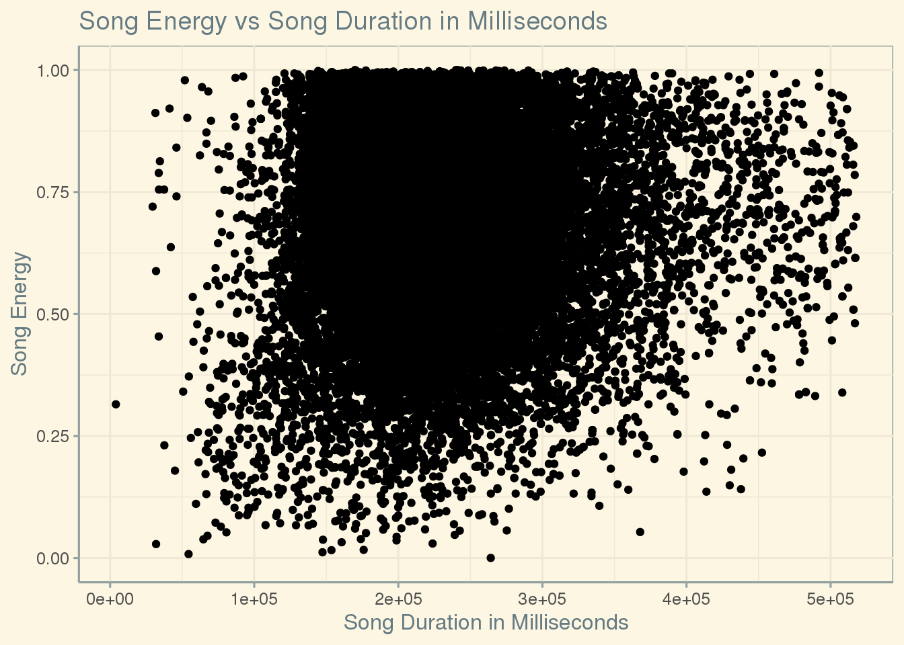

library(here)
library(ggplot2)
library(tidyverse)
library(readxl)
library(ggthemes)
knitr::opts_chunk$set(echo = FALSE, tidy = TRUE)
spotify <- read_csv(here::here("data", "tidytuesday",
"data","2020","2020-01-21","spotify_songs.csv"))Question 1: How does energy compare to the duration of a song? To test this I will create a chart, possibly a point or violin, to show dispersion and look for clustering at certain energy levels and times to see if there is a trend for how long high energy songs typically are and how long low energy songs are. 
Question 2: What are the 10 most popular songs? What genres show up more than once? To test this I will need to filter for genre, song name, and popularity and then arrange them in descending order. From there I will get a list of the top 10 popular songs and can see what genres show up more than once.
## # A tibble: 32,833 x 3
## # Groups: track_name [23,450]
## track_name playlist_genre track_popularity
## <chr> <chr> <dbl>
## 1 Dance Monkey pop 100
## 2 Dance Monkey latin 100
## 3 ROXANNE latin 99
## 4 ROXANNE r&b 99
## 5 ROXANNE r&b 99
## 6 ROXANNE edm 99
## 7 Tusa pop 98
## 8 Memories pop 98
## 9 Blinding Lights pop 98
## 10 Memories pop 98
## # … with 32,823 more rows